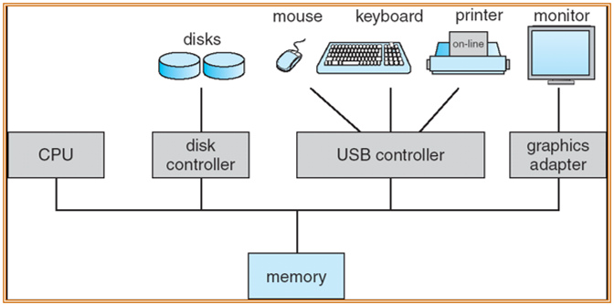
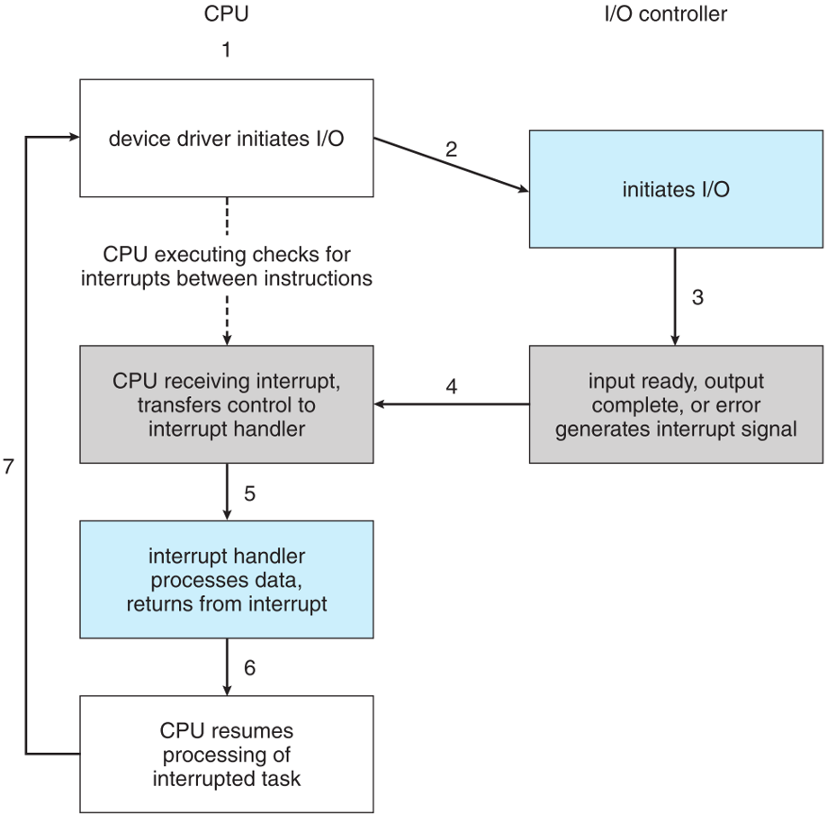
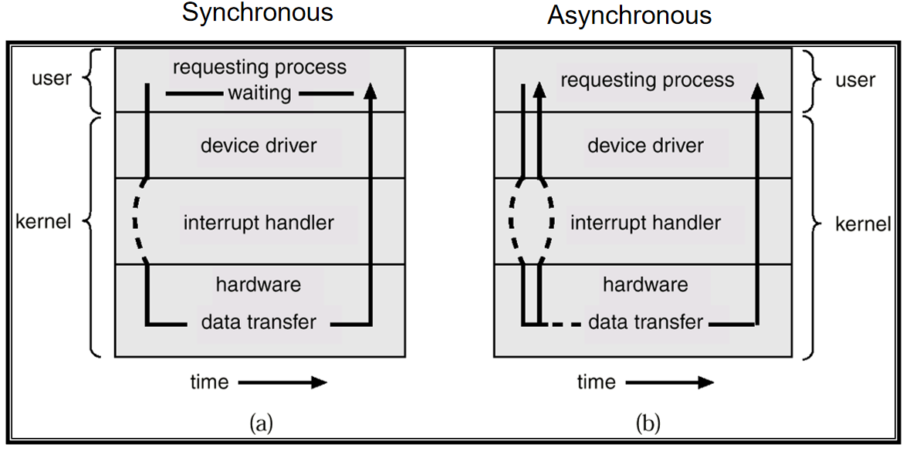
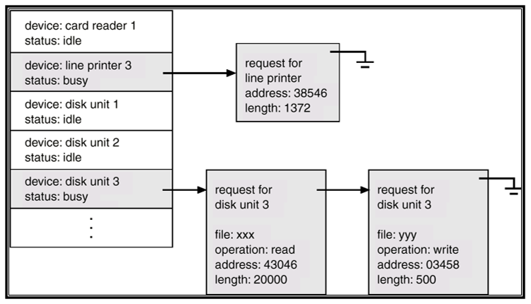
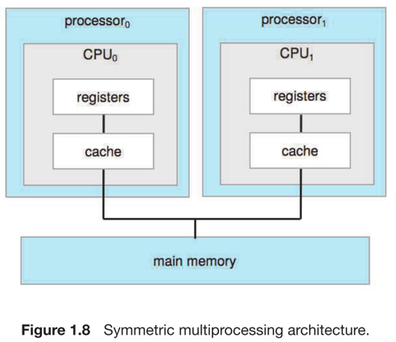
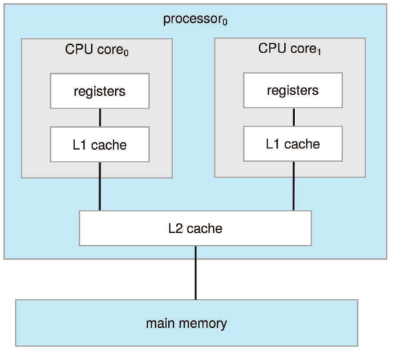
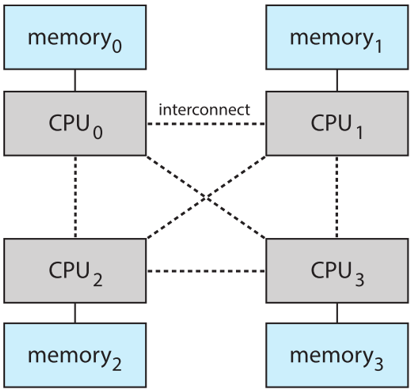
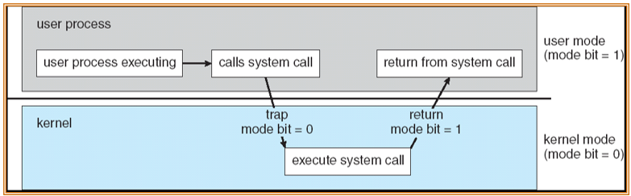

Introduction
约 2780 个字 9 张图片 预计阅读时间 19 分钟
操作系统介绍
什么是操作系统？
操作系统是介于计算机硬件和计算机用户之间的一个程序
操作系统目标
- 更容易的运行用户程序，解决用户问题
- 使得电脑系统的使用更加方便
电脑系统组成
- 计算机硬件
- CPU、内存、IO设备等
- 操作系统
- 帮助应用程序以及用户控制并且协调硬件
- 系统和应用软件
- 编译器、编辑器、数据库等
- 用户
- 人、机器以及其他计算机等
操作系统定义
- 操作系统是一个资源分配器
- 管理所有资源
- 处理冲突请求以获得高效公平的资源使用
- 操作系统是控制程序
- 控制程序的执行，避免错误以及对电脑的错误使用
操作系统是控制程序
- 控制程序的运行来预防错误以及对电脑的错误使用
操作系统启动
bootstrap program(存储于 ROM)是操作系统的启动程序，负责对操作系统进行初始化，并且将操作系统的内核加载到内存中。计
操作系统的组成
冯诺依曼架构

操作系统的行为
- I/O 设备和 CPU 可以同时运行
- 每一个设备控制器控制特定类型的设备
- 每一个设备控制器都有一个 local buffer
- CPU 将数据在 main memory 与 local buffer 之间移动
- IO 是从设备到设备控制器
- 设备控制器通过中断(interrupt)通知CPU它已经完成了它的操作(via system bus)
中断的常见使用方式
- 中断通过 interrupt vector 将控制权交给中断服务(interrupt service routine)，interrupt vector中包含所有中断服务的地址
- 中断架构必须保存被中断指令的地址。
- 在处理另一个中断时禁用传入中断，以防止中断丢失。
- 陷阱(trap)是由错误或用户请求（后者通常称为系统调用）引起的软件生成的中断。注意：名称在不同的体系结构中可能会有所不同。
- 操作系统是中断驱动的。
中断处理
- 操作系统通过保存寄存器和 pc 的数据来存储系统状态
- 确定发生了哪种类型的中断：
- 通过泛型例程进行轮询(polling)
- 矢量中断系统(vectored中断表)
- 单独的代码段决定对每种类型的中断应该采取什么行动
中断驱动的 IO 操作

两种 IO 方法
- I/O启动后，只有在I/O完成后，控制权才返回给用户程序。
- 等待指令使CPU闲置，直到下一个中断
- 等待循环（争用内存访问）
- 一次最多有一个未完成的I/O请求，没有同时进行的I/O处理
- I/O启动后，控制返回给用户程序，无需等待I/O完成。
- 系统调用——向操作系统发出请求，允许用户等待I/O完成
- 设备状态表包含每个I/O设备的条目，表明其类型、地址和状态
- 操作系统索引到I/O设备表以确定设备状态并修改表项以包括中断
同步和异步 IO 方法的比较

异步是非阻塞式的，不需要等待当前指令完全执行完毕（但非阻塞式不等于异步I/O处理）
设备状态表结构

设备等待的队列采用链表的结构。
- Direct Memory Access Structure
- 能够以接近内存速度传输信息的高速I/O设备
- 设备控制器将数据块从缓冲存储器直接传输到主存储器，无需CPU干预
- 每个块(block)只生成一个中断，而不是每个字节(byte)生成一个中断。
- Storage Structure
- 主存(Main memory)——只有CPU可以直接访问的大容量存储介质
- 二级存储——主存储器的扩展，提供大的非易失性存储容量。
- 磁盘——覆盖有磁性记录材料的刚性金属或玻璃盘片
- 磁盘表面逻辑上划分为磁道，磁道再细分为扇区
- 磁盘控制器决定设备和计算机之间的逻辑交互
补充
Caching – copying information into faster storage system
main memory can be viewed as a last cache for secondary storage
-
Caching
- 在计算机（硬件、操作系统、软件）的多个层次上执行
- 正在使用的信息暂时从较慢的存储复制到较快的存储——Speed mismatching
- 首先检查更快的存储(cache)，以确定信息是否存在
- 如果存在，信息直接从 cache 中使用(速度快)
- 如果不存在，需要将数据拷贝到 cache 中然后再使用
- Cache 小于正在缓存的存储
- 缓存管理
- 缓存大小和替换策略
-
将整数A从磁盘迁移到寄存器
- 多任务(Multitasking)环境必须小心使用最新的值，无论它存储在存储层次结构中的哪个位置
- 多处理器(Multiprocessor)环境必须在硬件中提供缓存一致性，以便所有cpu的缓存中都有最新的值
- 多任务(Multitasking)环境必须小心使用最新的值，无论它存储在存储层次结构中的哪个位置
- 多处理器系统(Multiprocessor Systems) SMO 结构
- 每一个 CPU 都有自己的寄存器集合
- 所有的处理器共享基于总线(system bus)的物理存储空间

- 多核系统(Multicore Systems)
- 片内通信比片间通信快(在同一个L2 cache中进行会比较快，减少了数据的搬运)
- 功耗更低(适合移动设备)

- NUMA 架构
- cpu 之间通过共享系统连接
- 添加越多处理器，效率越高
- 跨互连的远程内存很慢
- 操作系统需要细致的CPU调度和内存管理

操作系统结构分类
- 提高效率（CPU利用率）所需的多路编程(Multiprogramming)
- 单用户无法让 CPU 和 IO 设备始终处于繁忙状态
- 多路编程(Multiprogramming)组织工作，所以CPU总是有一个要执行
- 系统中总工作的一个子集保存在内存中
- 选择一个工作并通过工作调度运行
- 当它必须等待(例如 IO)时，操作系统切换到另一个工作
- 分时(multitasking)是一种逻辑扩展，在这种扩展中，CPU频繁地切换作业，用户可以在每个作业运行时与之交互，从而创建交互式计算
- 响应时间需要小于 1s
- 每个用户至少有一个程序在内存中执行 => 进程
- 如果多个作业准备同时运行 => CPU调度
- 如果进程不适合内存，交换(swapping)将它们移进移出以运行
- 虚拟内存(Virtual memory)允许执行不完全在内存中的进程
操作系统的行为(拓展)
中断和异常
中断和异常是什么
- 硬件驱动的 interrupt(中断)
- 软件错误或者请求导致的 exception(异常) 或者 trap(陷阱)
- 其他进程问题包括无限循环以及进程之间相互修改
如何保护
- 双模式(Dual-mode)操作允许操作系统保护自身和其他系统组件
- 包括用户模式(user mode)和内核模式(kernel mode)
- 硬件提供的模式位(Mode bit)
- 提供区分系统是在运行用户代码还是内核代码的能力
- 特权指令只能再内核态下运行
- 系统调用可以切换到内核态，调用返回之后会切换为用户态
从用户态切换到内核态

计时器防止无限循环/进程占用资源
- 在特定时间后设置中断
- 操作系统递减计数器
- 当计数器为零时产生中断
- 在调度过程之前设置，以重新控制或终止超出分配时间的程序
进程管理
- 进程工作需要一些必要的资源
- CPU, memory, I/O, files
- 初始化的数据
- 进程终止需要回收任何可重用资源
- 单线程进程有一个 pc 来指定下一个要执行的指令的位置
- 进程按顺序执行指令，每次执行一条，直到完成
- 多线程进程每个线程有一个 pc
- 通常系统有许多进程，一些用户，一些操作系统并发地运行在一个或多个 cpu 上
- 通过在进程/线程之间复用 cpu 来实现并发性
进程管理行为
- 创建和删除用户进程和系统进程
- 暂停和恢复进程
- 提供流程同步机制
- 提供流程通信机制
- 提供死锁处理机制
内存管理
- 所有数据在处理前后都必须在内存中
- 所有指令必须在内存中才能执行
- 内存管理决定什么是在内存中
- 优化CPU利用率和计算机对用户的响应
内存管理行为
- 跟踪内存的哪些部分当前正在被谁使用
- 决定将哪些进程（或其中的一部分）和数据移入和移出内存
- 根据需要分配和释放内存空间
存储管理
- 操作系统提供统一的、逻辑的信息存储视图
- 抽象物理属性到逻辑存储单元-文件
- 每种介质由设备(磁盘驱动器、磁带驱动器)控制
- 不同的属性包括访问速度、容量、数据传输速率、访问方法（顺序或随机）
- 文件系统管理
- 文件通常组织到目录中
- 对大多数系统进行访问控制，以确定谁可以访问什么
存储管理行为
- 创建和删除文件和目录
- 操作文件和目录的原语
- 将文件映射到辅助存储
- 将文件备份到稳定(非易失性)存储介质上
大容量存储(Mass-Storage)管理
- 通常，磁盘用于存储不能放在主存储器中的数据或必须保存长时间的数据。
- 适当的管理是至关重要的
- 计算机运行的整个速度取决于磁盘子系统及其算法
操作系统行为
- 空间管理
- 存储分配
- 磁盘调度
I/O 子程序
- 操作系统的一个目的是向用户隐藏硬件设备的特性——易于使用和编程
I/O 子系统行为
- I/O的内存管理，包括缓冲(在传输数据时临时存储数据)、缓存(将部分数据存储在更快的存储中以提高性能)、假脱机(一个作业的输出与其他作业的输入重叠)
- 通用设备驱动程序接口
- 特定硬件设备的驱动程序
操作系统目的
- Abstraction 抽象与封装，只暴露一些接口
- Multiplex 空间管理：内存，时间管理：进程
- Isolation 用户和内核
- Sharing 不同用户对于内存磁盘CPU都是共享的
- Security 特权指令的安全，权限等
- Performance 更高的性能
- Range of uses 更广泛的应用，面对不同场景的使用以及跨平台使用